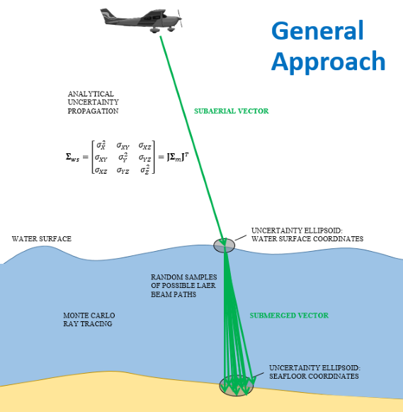

Overview¶
This tool computes the vertical total propagated uncertainty (TPU) of bathymetry acquired with a Riegl VQ-880-G topobathymetric lidar (other lidar systems will be included in future versions). The algorithm consists of subaerial and subaqueous components (see the figure below). Each component lends itself to a different approach to uncertainty propagation because of the relative complexity of the factors influencing the laser pulse travel path. Whereas the subaerial portion is a well-defined geometric problem that can be addressed using standard geomatics techniques, the subaqueous portion uses a Monte Carlo approach to model the complex interactions of light with water that are difficult to model analytically.
Image Credit: Chris Parrish
Algorithm Workflow¶
cBLUE calculates a horizontal and vertical total propagated uncertainty (THU and TVU, respectively) for each data point using standard SLOPOV (Special Law of Propagation of Variance) techniques. The algorithm workflow consists of three main steps:
Form Sensor Model Observation Equation
A laser geolocation equation is formed based on characteristics of the specified lidar sensor model. The symbolic math library SymPy (https://www.sympy.org/en/index.html) is used to construct the laser geolocation equation from specified laser and airplane rotation matrices.
Generate Jacobian
The general equation of the Jacobian, or the matrix of partial derivatives, of the laser geolocation equation is calculated using SymPy.
Propagate Uncertainty
Once the general equation of the Jacobian is calculated, the uncertainties of the component variables are propagated for each data point, per flight line, per Las tile, using the following steps:
- Merge the Las data and trajectory data (Merge class)
- Calculate subaerial THU and TVU (Subaerial class)
- Calculate subaqueous THU and TVU (Subaqueous class)
- Combine subaerial and subaqueous TPU (Tpu class)
- Export TPU as Las extra bytes (Tpu Class)